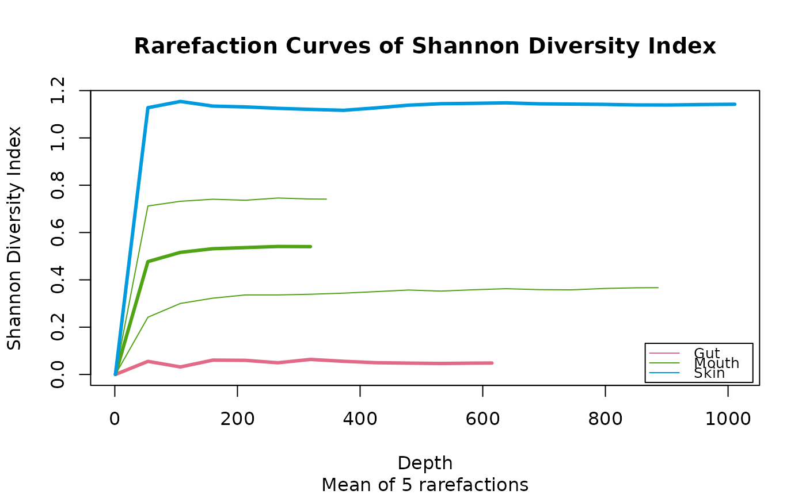
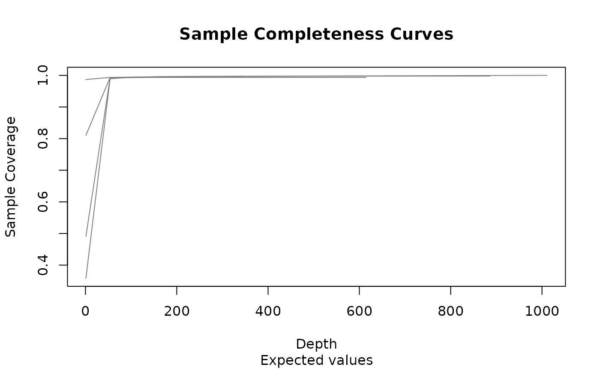

Alpha diversity against sequencing depth: each sample's diversity when it is subsampled (rarefied) to a range of depths. A curve that levels off says the sample was sequenced deeply enough to see most of its features; one still rising says deeper sequencing would find more. The curves also show which depth to rarefy to, and how many samples that depth keeps.
Usage
rarefaction_curve(
counts,
metric = "observed",
depths = NULL,
n_depths = 20L,
max_depth = NULL,
times = 10L,
analytic = NULL,
average = "mean",
cutoff = 10L,
digits = 3L,
tree = NULL,
q = 2,
bias_corrected = TRUE,
margin = 1L,
seed = 0L,
cpus = n_cpus()
)Arguments
- counts
A count table (samples \(\times\) features) of whole numbers; see Input Types. A
phyloseq,rbiomorTreeSummarizedExperimentobject's tree is used for the phylogenetic metrics.- metric
One or more alpha diversity metrics, such as
c('observed', 'shannon'): any ofalpha_div()'s, matched as it matches them (case-insensitive, with prefixes and aliases). Seelist_metrics(). Every rarefied table is used for all of them. Default:'observed'.- depths
The depths to compute the curves at: whole numbers of at least 1 (sorted, and duplicates dropped). Default:
NULL, a grid ofn_depthsdepths from 1 tomax_depth(see "The depths").- n_depths
The number of depths in the default grid, a whole number of at least 2. Default:
20.- max_depth
The largest depth computed. Default:
NULL, the largest library size (withdepths, the largest of them).- times
The number of rarefactions at each depth, for the metrics that are resampled, a whole number of at least 1. Default:
10, as QIIME 2'siterations.- analytic
Which metrics to compute in closed form.
NULL(the default):'observed'in closed form and every other metric by resampling.FALSE: resample'observed'too (to compare with QIIME 2).TRUE: every metric in closed form, which only'observed'has (an error otherwise).- average
How the rarefactions' values at a depth are combined, for the resampled metrics:
"mean"(the default) or"median". Case-insensitive, and a prefix is enough.- cutoff
The maximum number of observations to consider "rare". Default:
10.- digits
Precision of the returned values, in number of decimal places. E.g. the default
digits=3could return6.392.- tree
A
phylo-class object representing the phylogenetic tree for the OTUs incounts. The OTU identifiers given bycolnames(counts)must be present intree. Can be omitted if a tree is embedded with thecountsobject or asattr(counts, 'tree').- q
The order of a Hill number, or of Rényi's or Tsallis's entropy: a single number of at least 0, where
Infis allowed. Only used byhill(),renyi()andtsallis(). Default:2, as scikit-bio (which calls itorder).- bias_corrected
For Chao1 only: use the bias-corrected form (the default, as scikit-bio and QIIME 2), or the classic form when a sample has both singletons and doubletons (
FALSE). Seechao1().- margin
The margin containing samples.
1if samples are rows,2if samples are columns. Ignored whencountsis a special object class (e.g.phyloseq). Default:1- seed
An integer seed for the rarefactions: rarefaction \(t\) at every depth uses
seed + t - 1, asrarefy(times = )does (see "Nested rarefactions"). The same seed gives the same result, for anycpus. Default:0.- cpus
How many parallel processing threads should be used. The default,
n_cpus(), is the CPU cores this R process may use, within any limits set on it. Results are the same for anycpus.
Value
A data frame of class c("ecodive_rarefaction_curve", "data.frame"),
with one row per sample, metric and depth, ordered by sample, then
metric (in the order given), then depth. Columns:
sample: the sample's name, or its position (as text) in an unnamed table.metric: the metric's ID, as inlist_metrics().depth: the depth (an integer).value: the metric's expected value (closed form), or the mean or median over thetimesrarefactions.sd: the standard deviation of a subsample's value: Heck et al.'s (closed form; 0 at the sample's total), or over the rarefactions (with \(n - 1\) in the denominator;NAwithtimes = 1).coverage: the expected sample coverage at that depth. It does not depend on the metric.
Attributes:
totals: each sample's library size, named by sample.analytic: the IDs of the metrics computed in closed form (possibly none).timesandaverage: how the resampled metrics'valueandsdwere made.
Details
Two ways to compute a curve:
Exactly, in closed form (
'observed'): the expected number of features in a random subsample of \(d\) of a sample's \(N\) observations, drawn without replacement (Hurlbert 1971), $$E[S_d] = \sum_i \left[1 - \binom{N - x_i}{d} \Big/ \binom{N}{d}\right],$$ and its standard deviation (Heck et al. 1975). This is whatvegan::rarefy()andvegan::rarecurve()give. There is no randomness, andtimesandseedare not used.By resampling, for any alpha metric (QIIME 2's approach): the table is rarefied
timestimes at each depth, and the metric's values are averaged over the rarefactions.
Each row also has the expected sample coverage of a depth-\(d\)
subsample (Chao & Jost 2012), always in closed form,
$$C_d = 1 - \sum_i \frac{x_i}{N} \binom{N - x_i}{d} \Big/ \binom{N - 1}{d},$$
the share of the community's individuals that belong to features seen in
such a subsample. At the sample's own total (\(d = N\)), it is the
estimated coverage of the whole sample, \(1 - \frac{f_1}{N}
\frac{(N - 1) f_1}{(N - 1) f_1 + 2 f_2}\), where \(f_1\) and \(f_2\)
are the numbers of features seen once and twice (Chao et al. 2014, Eq. 12;
with \(f_2 = 0\), \(f_1 (f_1 - 1)\) replaces \(f_1^2\), as in their
Appendix G). These are the sample-completeness curves, and the x axis of
coverage-based curves; rarefy() uses them to rarefy to equal coverage.
The depths
With depths = NULL, the depths are n_depths points from 1 to
max_depth, as QIIME 2's np.linspace(1, max_depth, num = n_depths, dtype = int): \(1 + i (M - 1) / (n - 1)\), \(i = 0, \ldots, n - 1\),
rounded down, with the last exactly \(M\), and duplicates dropped.
Each sample's own library size is added to its depths (when it is at
most max_depth), so that each curve ends at the sample's observed
value. A sample has no rows at depths above its library size (QIIME 2
gives NaN there), and an empty sample has none at all.
QIIME 2's
alpha-rarefaction:n_depths = 10,analytic = FALSE,average = "median", withmax_depthas given to it.vegan::rarecurve()(every depth):depths = seq_len(max(totals)), wheretotalsare the library sizes; it computes richness in closed form, asrarefaction_curve()does.
Nested rarefactions
Rarefaction \(t\) at depth \(d\) is exactly rarefy(counts, d, seed = seed + t - 1), with the same seed at every depth. rarefy() keeps
observations by Knuth's selection sampling, one random draw per
observation, so with the same seed a smaller depth keeps a subset of
what a larger one keeps: each rarefaction is one accumulation of
observations, and its richness never decreases with depth. The curves
are smooth rather than jagged. QIIME 2 draws each depth independently;
the averages agree (up to random error), but single rarefactions differ.
Choosing a depth
Rarefy to a depth where most curves have levelled off, and that keeps the
samples you need: plot(x, depth = 1000) draws a line at that depth,
labelled with how many samples have at least that many observations
(from the totals attribute). To compare samples at equal completeness
instead, see the coverage column (plot(x, type = "completeness")) and
rarefy(counts, coverage = ).
Same names in other packages
None, but vegan::rarecurve() draws the same curves for richness (and
vegan::rarefy() gives their values), and iNEXT::iNEXT()'s
interpolated sample coverage (SC) is the coverage column.
References
Hurlbert, S. H. (1971). The nonconcept of species diversity: a critique and alternative parameters. Ecology, 52, 577–586. doi:10.2307/1934145
Heck, K. L., van Belle, G., & Simberloff, D. (1975). Explicit calculation of the rarefaction diversity measurement and the determination of sufficient sample size. Ecology, 56, 1459–1461. doi:10.2307/1934716
Chao, A., & Jost, L. (2012). Coverage-based rarefaction and extrapolation: standardizing samples by completeness rather than size. Ecology, 93, 2533–2547. doi:10.1890/11-1952.1
Chao, A., Gotelli, N. J., Hsieh, T. C., Sander, E. L., Ma, K. H., Colwell, R. K., & Ellison, A. M. (2014). Rarefaction and extrapolation with Hill numbers: a framework for sampling and estimation in species diversity studies. Ecological Monographs, 84, 45–67. doi:10.1890/13-0133.1
Bolyen, E., et al. (2019). Reproducible, interactive, scalable and extensible microbiome data science using QIIME 2. Nature Biotechnology, 37, 852–857. doi:10.1038/s41587-019-0209-9
Examples
# Expected richness, in closed form.
rc <- rarefaction_curve(ex_counts)
rc
#> # A data.frame: 59 × 6
#> # Rarefaction curves
#> sample metric depth value sd coverage
#> <chr> <chr> <int> <dbl> <dbl> <dbl>
#> 1 Saliva observed 1 1 0 0.491
#> 2 Saliva observed 54 2.45 0.58 0.992
#> 3 Saliva observed 107 2.83 0.679 0.993
#> 4 Saliva observed 160 3.18 0.672 0.994
#> 5 Saliva observed 213 3.47 0.6 0.995
#> 6 Saliva observed 266 3.72 0.475 0.996
#> 7 Saliva observed 319 3.92 0.274 0.997
#> 8 Saliva observed 345 4 0 0.997
#> 9 Gums observed 1 1 0 0.811
#> 10 Gums observed 54 2.34 0.538 0.994
#> # … 49 more rows
#> # Use print(x, n = ...) to see more rows
#> # Attributes: totals, analytic, times, average
plot(rc, depth = 1000)
 # Shannon diversity by resampling, coloured by body area.
area <- c(Saliva = 'Mouth', Gums = 'Mouth', Nose = 'Skin', Stool = 'Gut')
rc <- rarefaction_curve(ex_counts, c('observed', 'shannon'), times = 5)
rc
#> # A data.frame: 118 × 6
#> # Rarefaction curves
#> sample metric depth value sd coverage
#> <chr> <chr> <int> <dbl> <dbl> <dbl>
#> 1 Saliva observed 1 1 0 0.491
#> 2 Saliva observed 54 2.45 0.58 0.992
#> 3 Saliva observed 107 2.83 0.679 0.993
#> 4 Saliva observed 160 3.18 0.672 0.994
#> 5 Saliva observed 213 3.47 0.6 0.995
#> 6 Saliva observed 266 3.72 0.475 0.996
#> 7 Saliva observed 319 3.92 0.274 0.997
#> 8 Saliva observed 345 4 0 0.997
#> 9 Saliva shannon 1 0 0 0.491
#> 10 Saliva shannon 54 0.712 0.0507 0.992
#> # … 108 more rows
#> # Use print(x, n = ...) to see more rows
#> # Attributes: totals, analytic, times, average
plot(rc, 'shannon', groups = area)
# Shannon diversity by resampling, coloured by body area.
area <- c(Saliva = 'Mouth', Gums = 'Mouth', Nose = 'Skin', Stool = 'Gut')
rc <- rarefaction_curve(ex_counts, c('observed', 'shannon'), times = 5)
rc
#> # A data.frame: 118 × 6
#> # Rarefaction curves
#> sample metric depth value sd coverage
#> <chr> <chr> <int> <dbl> <dbl> <dbl>
#> 1 Saliva observed 1 1 0 0.491
#> 2 Saliva observed 54 2.45 0.58 0.992
#> 3 Saliva observed 107 2.83 0.679 0.993
#> 4 Saliva observed 160 3.18 0.672 0.994
#> 5 Saliva observed 213 3.47 0.6 0.995
#> 6 Saliva observed 266 3.72 0.475 0.996
#> 7 Saliva observed 319 3.92 0.274 0.997
#> 8 Saliva observed 345 4 0 0.997
#> 9 Saliva shannon 1 0 0 0.491
#> 10 Saliva shannon 54 0.712 0.0507 0.992
#> # … 108 more rows
#> # Use print(x, n = ...) to see more rows
#> # Attributes: totals, analytic, times, average
plot(rc, 'shannon', groups = area)

# Sample completeness: how coverage grows with depth.
plot(rc, type = 'completeness')
